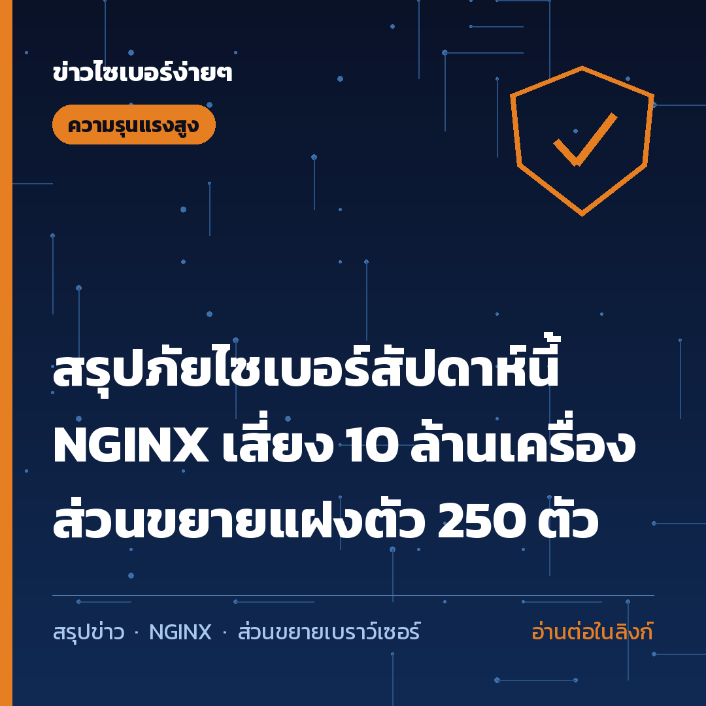

ข่าวไซเบอร์ล่าสุด
สรุปข่าวความปลอดภัยไซเบอร์เป็นภาษาไทยแบบอ่านง่าย อัปเดตทุก 6 ชั่วโมง

แฮกเกอร์ที่คาดโยงเวียดนาม เจาะหน่วยงานรัฐไทย-ฟิลิปปินส์ ล้วงข้อมูลทะเลจีนใต้
SOCRadar เปิดเผยกลุ่มแฮกเกอร์ WeaveLotus ที่คาดว่าเชื่อมโยงกับเวียดนาม เจาะระบบหน่วยงานทหาร รัฐสภา และหน่วยงานรัฐของไทยและฟิลิปปินส์รวม 5 ครั้ง ในช่วงสิงหาคมถึงกันยายน 2026 เพื่อหาข้อมูลข่าวกรองเรื่องทะเลจีนใต้ ช่องทางที่ใช้ส่วนใหญ่คือช่องโหว่เก่าที่ไม่ได้แพตช์และรหัสผ่านตั้งต้นที่ไม่เคยเปลี่ยน

แอปบน Microsoft Store ถูกใช้แอบปล่อยมัลแวร์ Vinci RAT คุมเครื่องจากระยะไกล
นักวิจัยจาก eSentire พบแอปชื่อ Setup Assistant บน Microsoft Store ที่ทำตัวเป็นประตูหลัง แล้วโหลดมัลแวร์ Vinci RAT มาควบคุมคอมพิวเตอร์ของเหยื่อ คนร้ายล่อเหยื่อผ่านเว็บดาวน์โหลดโปรแกรมปลอม เช่น Snipping Tool, Microsoft Teams และ Roblox บทเรียนสำคัญคือ แอปที่อยู่ในสโตร์ทางการก็ไม่ได้ปลอดภัยเสมอไป
รายงานความปลอดภัยรายไตรมาสไม่ทันแล้ว เมื่อคนร้ายใช้ AI เร่งการโจมตี
บทความความเห็นชี้ว่าตัวชี้วัดความปลอดภัยที่รวบรวมด้วยมือแล้วรายงานปีละไม่กี่ครั้ง ล้าสมัยตั้งแต่วันที่ทำเสร็จ ขณะที่คนร้ายใช้ AI ทำงานเร็วขึ้นมาก องค์กรจึงควรเปลี่ยนไปมองเห็นสถานะความปลอดภัยของตัวเองแบบต่อเนื่อง

เว็บทางการ SoftwareOK ถูกแฝงมัลแวร์ในตัวติดตั้ง Q-Dir และ DesktopOK
ไฟล์ติดตั้งโปรแกรมฟรียอดนิยม Q-Dir และ DesktopOK บนเว็บไซต์ทางการของ SoftwareOK ถูกสับเปลี่ยนเป็นเวอร์ชันที่มีมัลแวร์ควบคุมเครื่องระยะไกล (RAT) ซ่อนอยู่ ทั้งคนที่ดาวน์โหลดใหม่และคนที่กดอัปเดตโปรแกรมเดิมอาจโดนด้วย
สวิสยืนยัน AI agent เจาะระบบโครงสร้างพื้นฐานสำคัญได้จริงเป็นครั้งแรก
ศูนย์ความมั่นคงปลอดภัยไซเบอร์ของสวิตเซอร์แลนด์ยืนยันว่าคนร้ายใช้ AI agent โจมตีองค์กรในประเทศ 5 ครั้ง สำเร็จ 4 ครั้ง รวมถึงผู้ให้บริการโครงสร้างพื้นฐานสำคัญ 2 ราย ขณะที่อิตาลีและอังกฤษก็รายงานแนวโน้มเดียวกัน

ช่องโหว่ Zero-day ใน Cacti ยึดเซิร์ฟเวอร์ได้ด้วย 4 คำขอ หากเปิดบัญชี guest
นักวิจัยเปิดเผยวิธีเจาะโปรแกรมมอนิเตอร์เครือข่าย Cacti เวอร์ชันล่าสุด 1.2.31 ให้รันคำสั่งบนเซิร์ฟเวอร์ได้โดยไม่ต้องล็อกอิน แค่ส่งคำขอเว็บ 4 ครั้ง หากเปิดใช้บัญชี guest ไว้ ตอนนี้ยังไม่มีแพตช์

สรุปภัยไซเบอร์ประจำสัปดาห์: NGINX เสี่ยง 10 ล้านเครื่อง, ส่วนขยายเบราว์เซอร์แฝงตัว 250 ตัว
สรุปข่าวเด่นประจำสัปดาห์: เซิร์ฟเวอร์ NGINX กว่า 10 ล้านเครื่องเสี่ยงช่องโหว่ NGINX2Root, Microsoft พบส่วนขยายเบราว์เซอร์กว่า 250 ตัวที่เปลี่ยนพฤติกรรมเมื่อติดตั้งผ่านโฆษณา, Todoist ถูกเจาะข้อมูลผู้ใช้ 6% และเซิร์ฟเวอร์ AI ที่เปิดทิ้งไว้ถูกคนอื่นแอบใช้

แฮกเกอร์เกาหลีเหนือฝังมัลแวร์ใน GitHub กว่า 7,600 โปรเจกต์
แคมเปญ PolinRider ที่เชื่อมโยงกับเกาหลีเหนือแอบฝังโค้ดอันตรายลงในโปรเจกต์บน GitHub กว่า 7,600 แห่ง แค่นักพัฒนาสั่ง build โปรเจกต์ หรือบางครั้งแค่เปิดโฟลเดอร์ใน VS Code มัลแวร์ก็ทำงานทันที เป้าหมายคือขโมยรหัสผ่าน คุกกี้ และกระเป๋าเงินคริปโต
ชุดฟิชชิง DOMDIFFER หลบระบบป้องกันได้มากที่สุด ใช้หน้าล็อกอินจริงของ Google
Push Security จัดอันดับชุดเครื่องมือฟิชชิงที่หลุดผ่านระบบป้องกันขององค์กรได้บ่อยที่สุด อันดับหนึ่งคือ DOMDIFFER ที่ส่ง ‘หน้าล็อกอินจริง’ ของ Google และ Microsoft จากเบราว์เซอร์ของแฮกเกอร์มาให้เหยื่อเห็น จึงแยกจากของจริงได้ยากมาก